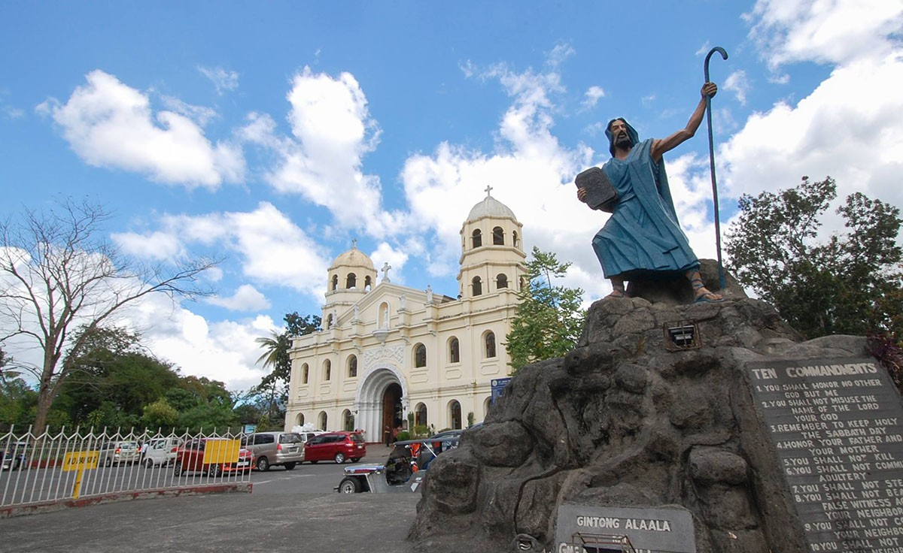
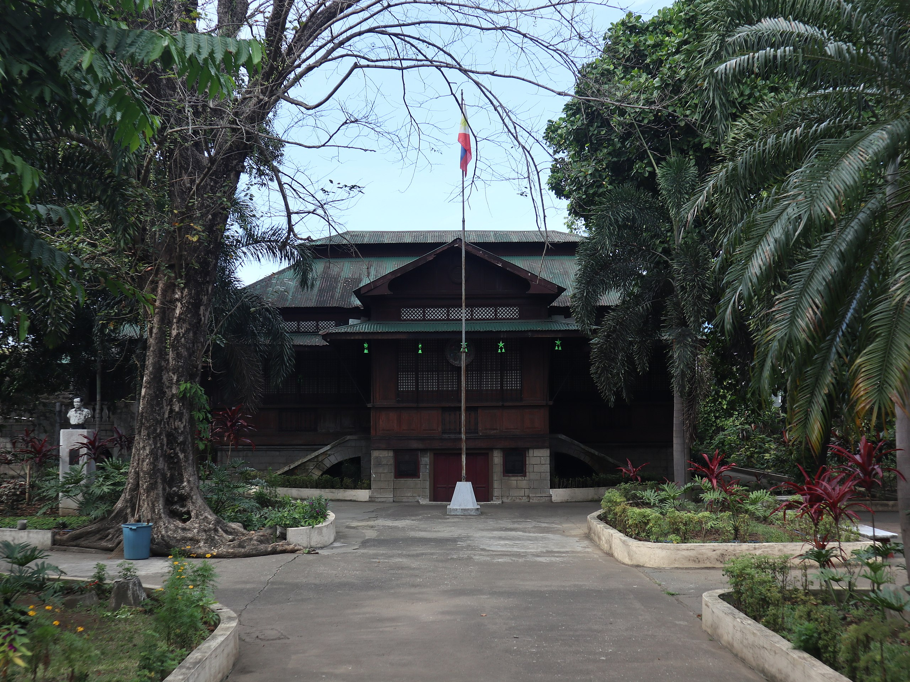

Cultural Landmarks

Apolinario Mabini Shrine
A historic shrine dedicated to the "Sublime Paralytic" and "Brains of the Revolution."

San Juan Bautista Parish Church
A historic church that stands as a testament to Tanauan's deep religious heritage.

Jose P. Laurel Memorial Shrine
A memorial shrine honoring the legacy of President Jose P. Laurel, a prominent Filipino leader.